OpenSarToolkit v2.2.1
Preprocessing an S1 image with OpenSarToolkit OST.
This software is licensed under the terms of the Creative Commons Attribution 4.0 International license - SPDX short identifier: CC-BY-4.0
2026-03-10 - 2026-04-10T11:50:46.165 Copyright Terradue Srl - > https://ror.org/0069cx113
Project Team
Authors
| Name | Organization | Role | Identifier | |
|---|---|---|---|---|
| Vollrath, Andreas | andreas.vollrath@fao.org | Food and Agriculture Organization of the United Nations | https://github.com/BuddyVolly | |
| Lurcock, Pontus | pontus.lurcock@brockmann-consult.de | Brockmann Consult | https://orcid.org/0000-0001-6994-071X |
Contributors
| Name | Organization | Role | Identifier | |
|---|---|---|---|---|
| Vaccari, Simone | simone.vaccari@terradue.com | Terradue Srl | Researcher | https://orcid.org/0000-0002-2757-4165 |
DeveloperGuide
DeveloperGuide can be found on https://terradue.github.io/eoap-open-sar-toolkit/.
Runtime environment
Supported Operating Systems
- Linux
- MacOS X
Requirements
Software Source code
- Browsable version of the source repository;
- Continuous integration system used by the project;
- Issues, bugs, and feature requests should be submitted to the following issue management system for this project
opensartoolkit
CWL Class
Requirements
- NetworkAccess
- SubworkflowFeatureRequirement
- StepInputExpressionRequirement
- InlineJavascriptRequirement
- SchemaDefRequirement
Inputs
| Id | Type | Label | Doc |
|---|---|---|---|
resolution |
int | Resolution | Resolution in metres |
ard-type |
One of:
|
ARD type | Type of analysis-ready data to produce |
with-speckle-filter |
One of:
|
Speckle filter | Whether to apply a speckle filter |
resampling-method |
One of:
|
Resampling method | Resampling method to use |
target_datetime |
DateTime:
|
Target datetime | Target datetime in ISO 8601 format |
bbox |
Polygon: | Area of interest | AOI polygon (bbox field will be used for STAC bbox) |
Steps
| Id | Runs | Label | Doc |
|---|---|---|---|
| build_search_request | #build_search_request |
Build search_request and add datetime-interval | None |
| discovery | #odata-client |
OData API discovery | Discover STAC items from a OData API endpoint based on a search request |
| convert_search | #convert-search |
Convert Search | Convert Search results to get the item self hrefs |
| s1_subworkflow | #s1_subworkflow |
Sub-workflow to process searched S1 data | Sub-workflow to process searched S1 data |
Outputs
| Id | Type | Label | Doc |
|---|---|---|---|
output |
Directory | OST ARD COG output | OST ARD COG output in a STAC catalog structure |
OGC API - Processes
When opensartoolkit Workflow is exposed through OGC API - Processes - Part 1: Core, inputs and outputs fields below represent the interface of the getProcessDescription API.
Inputs
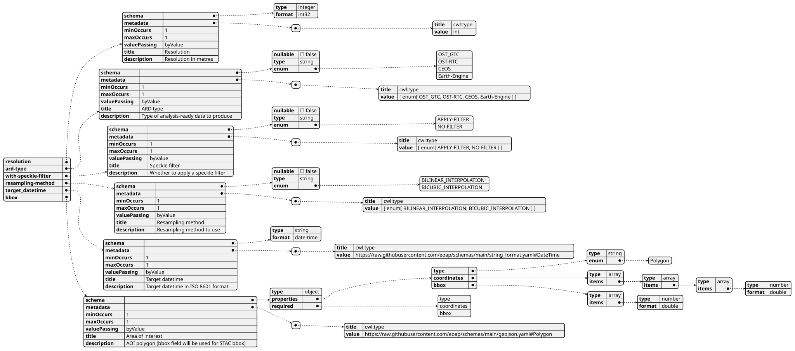
Outputs
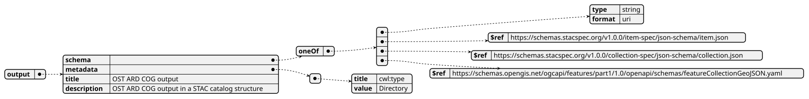
UML Diagrams
Activity diagram
Learn more about the Activity diagram below.
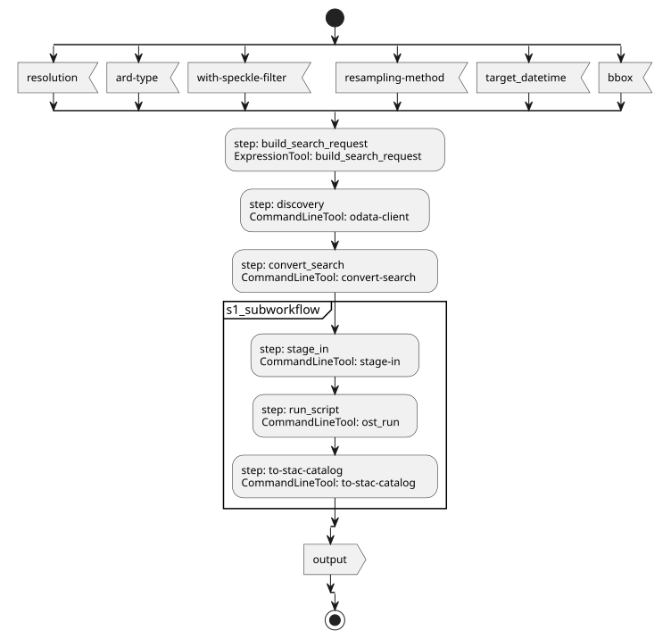
Component diagram
Learn more about the Component diagram below.
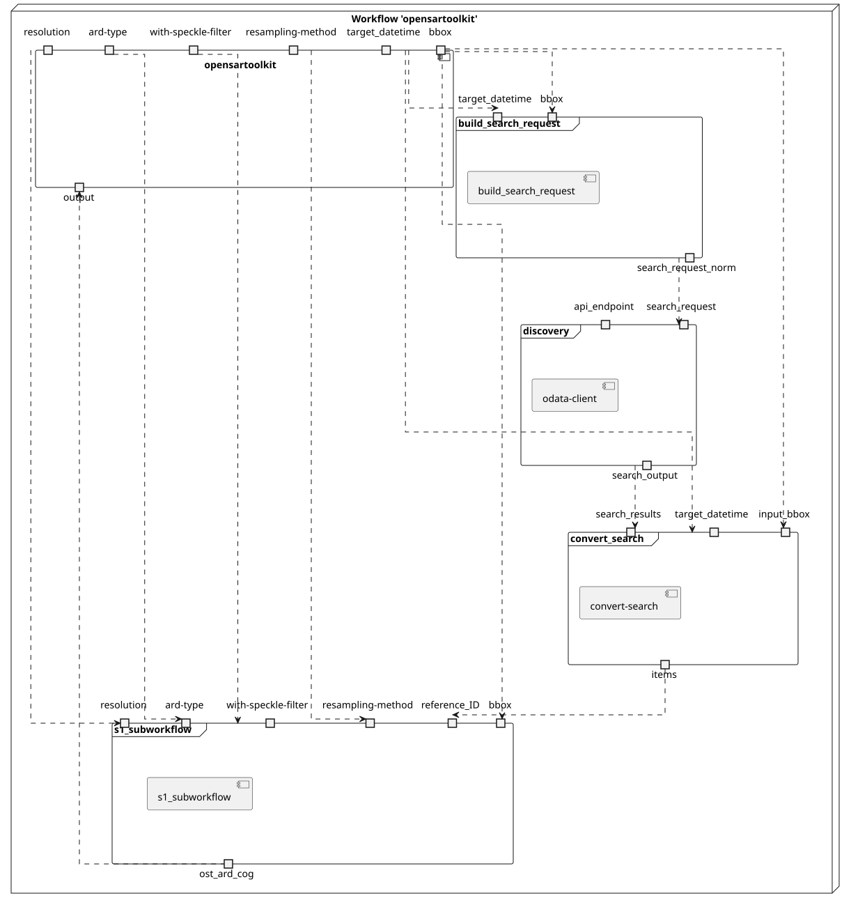
Class diagram
Learn more about the Class diagram below.
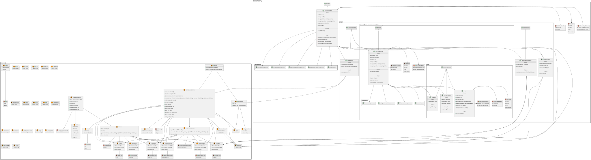
Sequence diagram
Learn more about the Sequence diagram below.
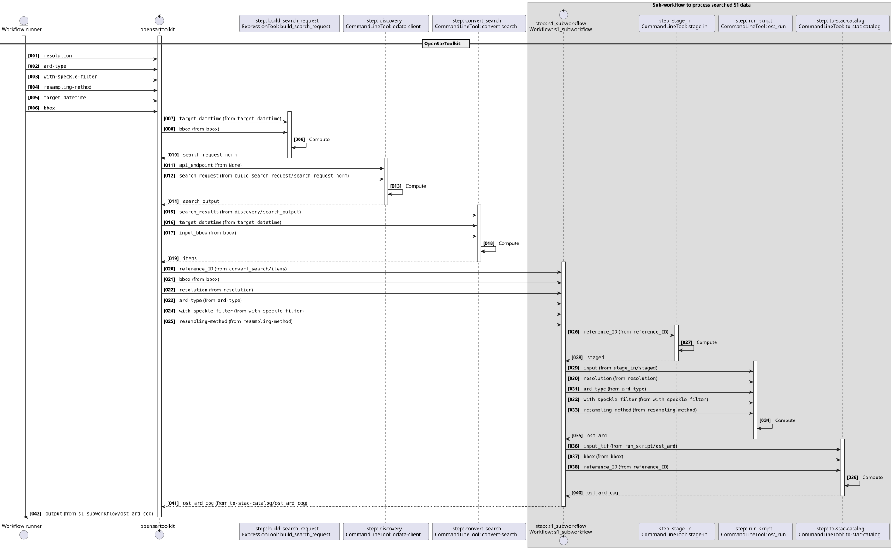
State diagram
Learn more about the State diagram below.
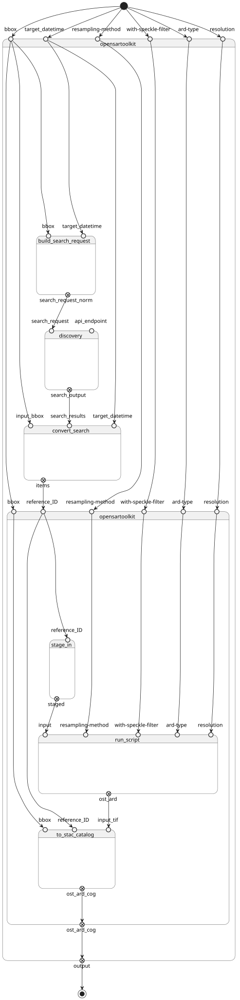
Run in step
build_search_request
build_search_request
CWL Class
Inputs
| Id | Option | Type |
|---|---|---|
target_datetime |
--target_datetime |
DateTime:
|
bbox |
--bbox |
Polygon: |
Run in step
discovery
odata-client
CWL Class
Inputs
| Id | Option | Type |
|---|---|---|
api_endpoint |
--api_endpoint |
APIEndpoint: |
search_request |
--search_request |
STACSearchSettings:
|
Execution usage example:
odata-client search $(inputs.api_endpoint.url.value) ${ const args = []; const collections = inputs.search_request.collections; args.push('--collections', collections.join(",")); return args; } ${ const args = []; const bbox = inputs.search_request?.bbox; if (Array.isArray(bbox) && bbox.length >= 4) { args.push('--bbox', ...bbox.map(String)); } return args; } ${ const args = []; const limit = inputs.search_request?.limit; args.push("--limit", (limit ?? 10).toString()); return args; } ${ const maxItems = inputs.search_request?.['max-items']; return ['--max-items', (maxItems ?? 20).toString()]; } ${ const args = []; const filter = inputs.search_request?.filter; const filterLang = inputs.search_request?.['filter-lang']; if (filterLang) { args.push('--filter-lang', filterLang); } if (filter) { args.push('--filter', JSON.stringify(filter)); } return args; } ${ const datetime = inputs.search_request?.datetime; const datetimeInterval = inputs.search_request?.datetime_interval; if (datetime) { return ['--datetime', datetime]; } else if (datetimeInterval) { const start = datetimeInterval.start?.value || '..'; const end = datetimeInterval.end?.value || '..'; return ['--datetime', `${start}/${end}`]; } return []; } ${ const ids = inputs.search_request?.ids; const args = []; if (Array.isArray(ids) && ids.length > 0) { args.push('--ids', ...ids.map(String)); } return args; } ${ const intersects = inputs.search_request?.intersects; if (intersects) { return ['--intersects', JSON.stringify(intersects)]; } return []; } --save discovery-output.json \
--api_endpoint <API_ENDPOINT> \
--search_request <SEARCH_REQUEST>
Run in step
convert_search
convert-search
CWL Class
Inputs
| Id | Option | Type |
|---|---|---|
target_datetime |
--target-datetime |
DateTime:
|
search_results |
--search-results |
File |
input_bbox |
--input-bbox |
Polygon: |
Execution usage example:
convert-search \
--target-datetime <TARGET_DATETIME> \
--search-results <SEARCH_RESULTS> \
--input-bbox <INPUT_BBOX>
Run in step
s1_subworkflow
s1_subworkflow
CWL Class
Requirements
Inputs
| Id | Type | Label | Doc |
|---|---|---|---|
reference_ID |
string | Product reference ID | None |
bbox |
One of: | Bounding Box | Bounding box [minx, miny, maxx, maxy] in the raster CRS |
resolution |
int | Resolution | Resolution in metres |
ard-type |
One of:
|
ARD type | Type of analysis-ready data to produce |
with-speckle-filter |
One of:
|
Speckle filter | Whether to apply a speckle filter |
resampling-method |
One of:
|
Resampling method | Resampling method to use |
Steps
| Id | Runs | Label | Doc |
|---|---|---|---|
| stage_in | #stage-in |
Stage-in S1 data | Stage-in S1 data with Arvesto |
| run_script | #ost_run |
None | None |
| to-stac-catalog | #to-stac-catalog |
None | None |
Outputs
| Id | Type | Label | Doc |
|---|---|---|---|
ost_ard_cog |
Directory | OST ARD COG output | OST ARD COG output in a STAC catalog structure |
OGC API - Processes
When s1_subworkflow Workflow is exposed through OGC API - Processes - Part 1: Core, inputs and outputs fields below represent the interface of the getProcessDescription API.
Inputs
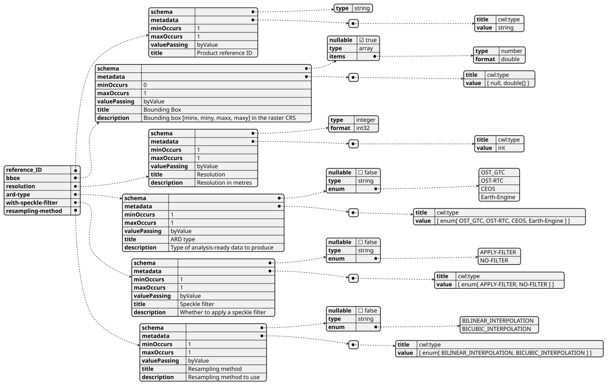
Outputs
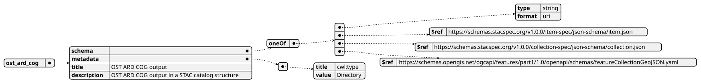
UML Diagrams
Activity diagram
Learn more about the Activity diagram below.
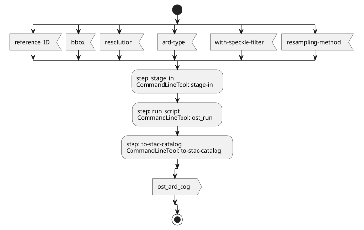
Component diagram
Learn more about the Component diagram below.
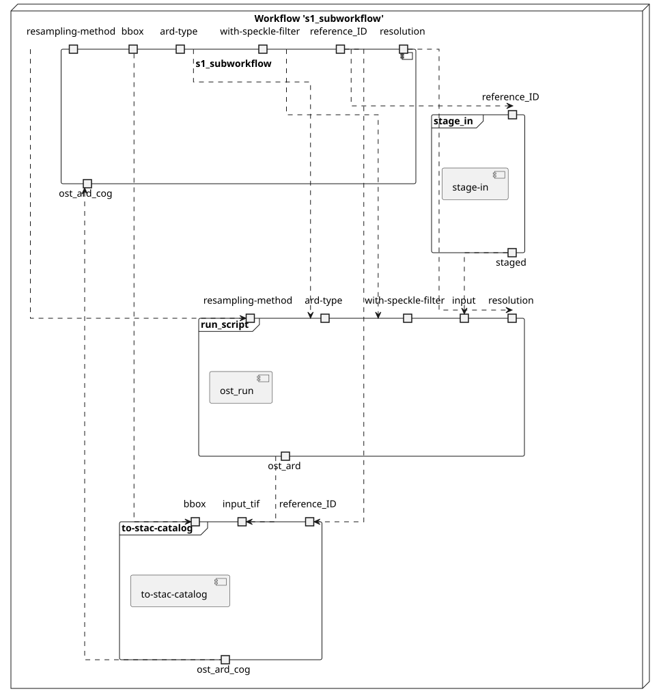
Class diagram
Learn more about the Class diagram below.
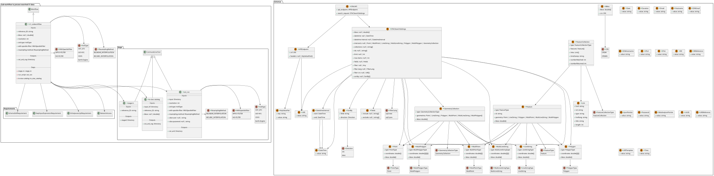
Sequence diagram
Learn more about the Sequence diagram below.
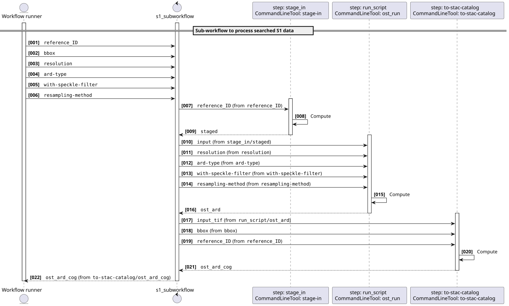
State diagram
Learn more about the State diagram below.
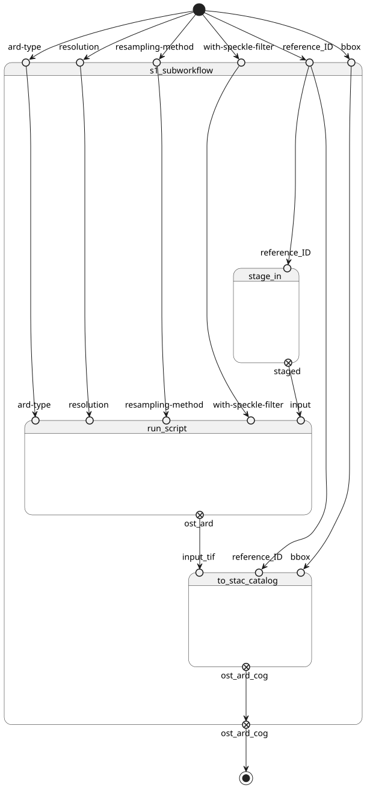
Run in step
stage_in
stage-in
CWL Class
Inputs
| Id | Option | Type |
|---|---|---|
reference_ID |
--reference_ID |
string |
Execution usage example:
/bin/bash arvesto.sh \
--reference_ID <REFERENCE_ID>
Run in step
run_script
ost_run
CWL Class
Inputs
| Id | Option | Type |
|---|---|---|
input |
--input |
Directory |
resolution |
--resolution |
int |
ard-type |
--ard-type |
One of:
|
with-speckle-filter |
--with-speckle-filter |
One of:
|
resampling-method |
--resampling-method |
One of:
|
cdse-user |
--cdse-user |
One of: |
cdse-password |
--cdse-password |
One of: |
Execution usage example:
/bin/bash run_me.sh --wipe-cwd \
--input <INPUT> \
--resolution <RESOLUTION> \
--ard-type <ARD-TYPE> \
--with-speckle-filter <WITH-SPECKLE-FILTER> \
--resampling-method <RESAMPLING-METHOD> \
(--cdse-user <CDSE-USER>) \
(--cdse-password <CDSE-PASSWORD>)
Run in step
to-stac-catalog
to-stac-catalog
CWL Class
Inputs
| Id | Option | Type |
|---|---|---|
input_tif |
--input-tif |
Directory |
reference_ID |
--reference-id |
string |
bbox |
--bbox |
One of: |
Execution usage example:
stac-catalog \
--input-tif <INPUT_TIF> \
--reference-id <REFERENCE_ID> \
(--bbox <BBOX>)